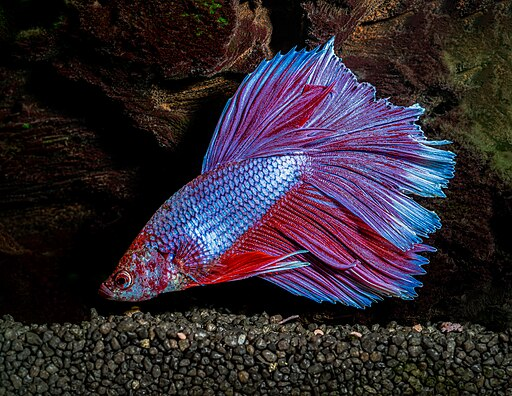
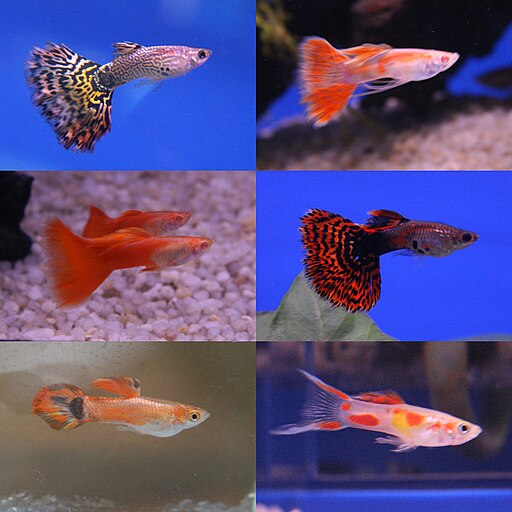
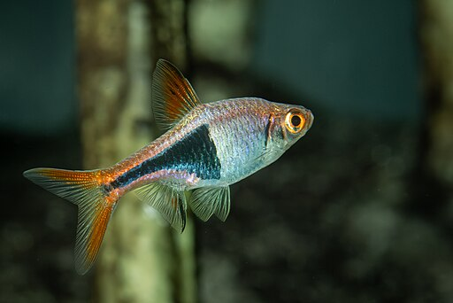
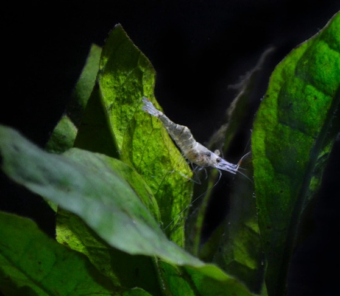
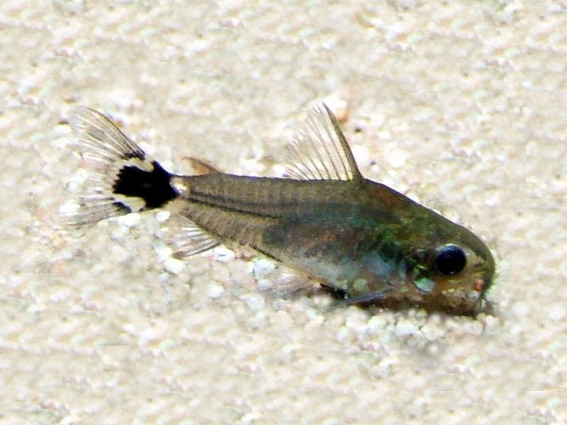
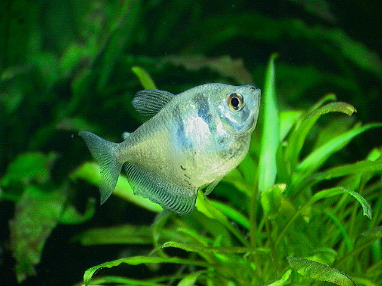
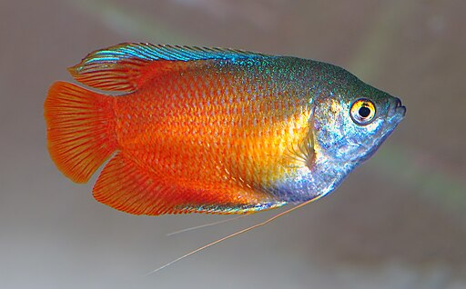

About My Aquariums
Ever since I was 7, I had some experience with keeping fish. I had over a decade long hiatus, but now I have gotten back into keeping fish in my home.
Fish I have kept when I was younger...
- Black Skirt Tetra
- Honey Gourami
- Neon Tetra
- Ghost Shrimp
- Pygmy Corydora
Fish I have kept more recently...
- Betta
- Harlequin Rasbora
- Variety of Fancytail Guppies
School of Fish
Gallery of all the fish I've owned








Image Credits:
Black Skirt Tetra
Veuve (5).JPG Image by: SychriscarHoney Gourami
Colisa lalia - Trichogaster lalius (aka) Image by: André KarwathHarlequin Rasbora
Trigonostigma heteromorpha Natural History Museum University of Pisa Image by: Mattia NocciolaPygmy Corydora
Corydoras hastatus Image by: AquariaNRNeon Tetra
Neonka obecna paracheirodon innesi Image by: Aleš TošovskýBetta
Bojownik syjamski Image by: Henryk NiestrójVarious Guppies
Guppy breeds Image by: MelanochromisGhost Shrimp
Shrimp, Aquarium, Underwater Image by: jacobmwhitney1